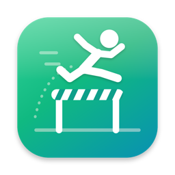

Sideload apps.
Forget the 7‑day limit.
GatePass is a Mac app. Drop an .ipa onto it and it lands on your iPhone, iPad or Apple TV, then gets re-signed before it expires.
01 — Drop
projects
Drop it on your Mac.
It's on your iPhone.
Drag an .ipa or .tipa onto GatePass, or pick one from your recent files. It signs with your own Apple ID and installs. That's the whole workflow.
02 — Auto-refresh
left
Then it
renews itself.
Free Apple IDs sign apps for 7 days. GatePass waits in your Mac's menu bar, and whenever your device shows up with apps due, it re-signs them and sends you a notification.
03 — Devices
device
USB or Wi‑Fi.
Your call.
iPhone, iPad and Apple TV. Plug in once, and after that GatePass can reach them over your local network.
04 — My apps
refresh
Every app,
at a glance.
My Apps shows everything you've installed with a days-left ring, right next to your recent IPAs and a folder you can browse.
05 — Privacy
of ours
Your password goes to Apple. Only Apple.
Device data is generated locally by your Mac, so Apple sees your real Mac. Your session stays in a file only your user account can read, or in Keychain if you prefer. No account with us, no tracking.
The fine print
Know the limits.
Apple sets these for free Apple IDs. GatePass works inside them and does the renewing for you.
Apps expire after a week unless re-signed. Auto-refresh handles it.
At most three sideloaded apps on a device at the same time.
New App IDs you can register in a rolling seven days.
First launch: "GatePass can't be opened"?
GatePass isn't notarized by Apple yet, so macOS asks you to confirm once.
- Open GatePass once, then close the warning.
- Go to System Settings → Privacy & Security.
- Scroll down and click Open Anyway next to GatePass.
FAQ
Is it really free?
Yes. GatePass is free and open source under the MIT license, and it works with a free Apple ID. There's no account with us and no subscription.
Does my device need to be connected for auto-refresh?
It needs to be reachable, over USB or on the same Wi‑Fi as your Mac, with GatePass running in the menu bar. Renewal happens whenever the device shows up.
Is my Apple ID safe?
Your password is only sent to Apple. Login uses the same private Apple APIs every sideloader uses. If you prefer, sign in with a secondary Apple ID.
Where do I get .ipa files?
From apps you build yourself or apps you have the right to install, such as open-source projects that publish IPAs.